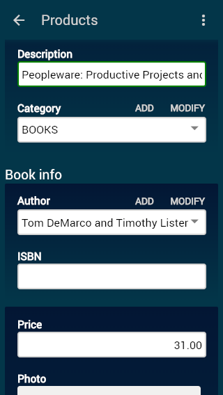
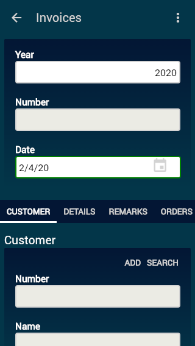

With
XavaPro
you only have to access to your OpenXava application from a mobile browser
to enjoy a mobile suitable interface, without writing any additional code.
The mobile user interface includes security, module navigation, list mode,
detail mode, properties, references, collections, groups and sections. All
this with the typical OpenXava behavior plus your own actions that will
work fine for most case.
Examples
These examples use the Terra, Blue
and Dark themes, however all the themes from desktop UI are
available in mobile automatically.
This is the login page:
This is the menu:
The list mode:
The detail mode:
A group:
Terra

|
Blue

|
Dark

|
A collection:
Sections:
Terra

|
Blue

|
Dark

|
Modules only for mobile (or only for desktop) (new in v6.3)
By default all the modules of your application are available for both
mobile and desktop. However, you can choose what modules will be available
for mobile and for desktop. For that, go to the Modules module in
Admin folder, choose the module in question and check/uncheck the Mobile
and Desktop checkboxes:

Different view and actions for mobile and desktop (new in v6.3)
XavaPro adapts automatically the
view and actions you have for the desktop in order to work nicely in
mobile. However, sometimes you want a still simpler version for the
mobile, maybe with less fields and less actions. For these cases, the
solution is to define a module in application.xml just for mobile.
For example:
<module name="InvoiceMobile">
<model name="Invoice"/>
<view name="Mobile"/>
<controller name="InvoiceMobile"/>
</module>
Then define a @View called
Mobile in the Invoice entity with the members to be shown
in mobile, also define the controller InvoiceMobile in controllers.xml
with actions to be available in mobile. Afterwards, use the Modules
module in Admin folder (explained in the previous section) to mark
the InvoiceMobile module available only for mobile and the Invoice
module available only for desktop.
Also you should define the label
for InvoiceMobile to remove the 'Mobile' suffix, this in the i18n
labels files, with an entry like this: